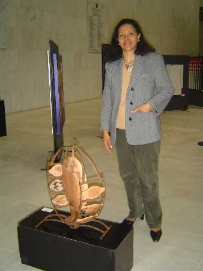
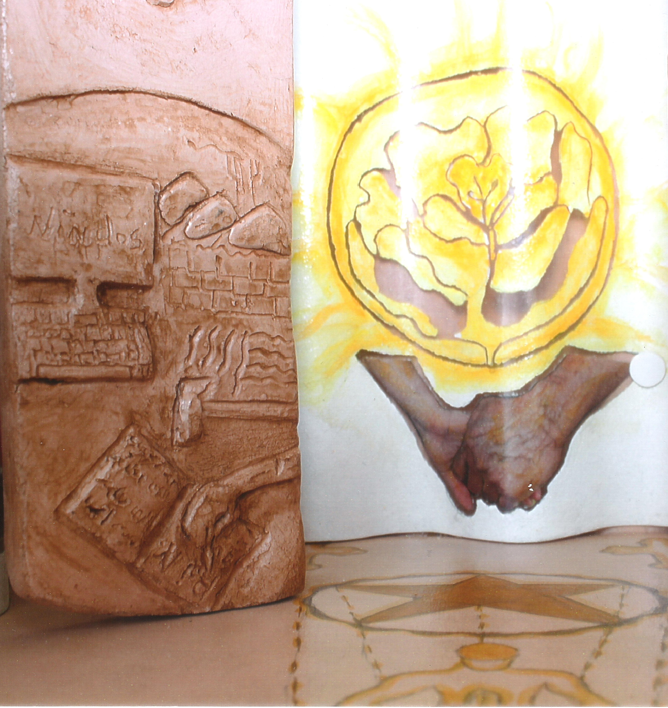
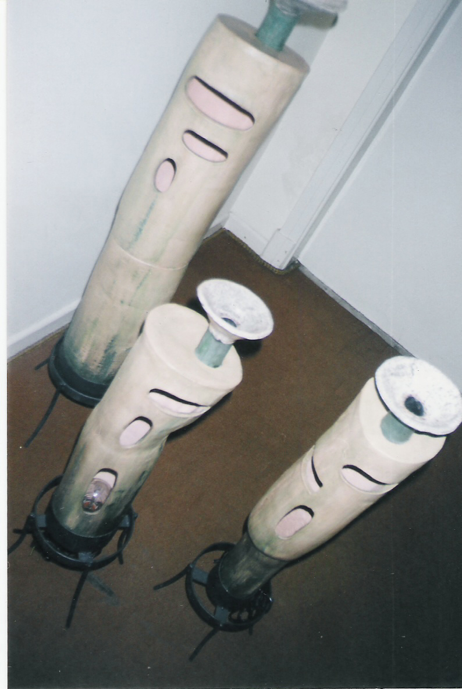

Escultura & Instalação


Escultura & Instalação

Instalação suspensa
Tecido, metal e tinta cruzam-se em painéis suspensos — uma série que volta, em diferentes versões, ao mesmo gesto: o que a água carrega e o que fica marcado.
Ver no portfólio →Cerâmica
Duas placas em cerâmica — uma talhada em relevo, outra pintada em vidrado dourado — reunidas num só gesto de mãos que seguram luz.
Sobre a artista →
Objetos autorais
Luminárias esculpidas à mão, cada uma com sua própria talha e postura — objetos de encomenda, feitos um a um.
Ver em Design →